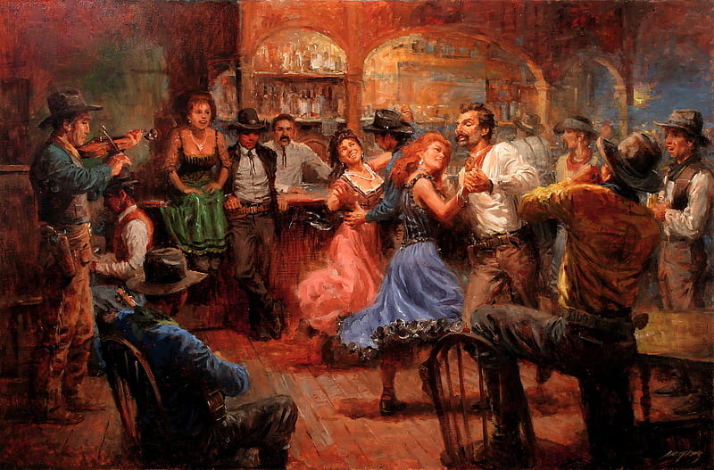

Tracing the History and Evolution of Dance
Dance's diverse history traces back to ancient civilizations.
From the sacred rituals of ancient cultures to the courtly dances of medieval times, the art form has evolved and adapted, reflecting the social, cultural, and artistic dynamics of each era. In the Renaissance, intricate court dances captivated European aristocracy, while the 20th century witnessed the emergence of groundbreaking styles like jazz, tap, Hip-Hop and contemporary dance. Today, the history of dance continues to unfold, with contemporary choreographers pushing boundaries and fusing traditions, ensuring that this captivating art form remains a vibrant and evolving testament to human expression and creativity.
View more SubscribeContemporary Dance styles
Originating in the Bronx during the 1970s, hip-hop dance is a dynamic and expressive form blending various street styles. Fueled by breakdancing, popping, locking, and freestyle movements, it embodies urban culture. Today, hip-hop dance continues to evolve, influencing mainstream culture and remaining a powerful mode of self-expression.
Emerging in the 1970s, Locking dance is a funk style characterized by sudden pauses, "locks," and energetic movements. Created by Don Campbell, it exudes joy and playfulness. Locking's vibrant, dynamic nature has made it a foundational element in hip-hop dance, celebrated for its rhythmic precision and individual flair.
Born in Chicago's underground clubs during the 1980s, House dance is a fluid and improvisational style rooted in disco and electronic music. Characterized by intricate footwork, fluid movements, and soulful expression, it reflects the vibrant energy of the house music culture, becoming a global dance phenomenon.
Originating in the 1970s, Popping dance is a funk style marked by quick contractions and releases of muscles ("pops") to create jerky, robotic movements. With influences from mime and robot styles, popping is a key element in hip-hop dance, known for its precision, isolations, and dynamic visual effects.
There are many other dance styles which are widely popular and are not included above.